-
“Conchita, porque não vai com mais frequência visitar o Meu FILHO no SANTÍSSIMO SACRAMENTO?
Por que se entrega a preguiça, não indo LHE visitar, quando ELE está esperando dia e
noite”?
-
“Conchita, porque não vai com mais frequência visitar o Meu FILHO no SANTÍSSIMO SACRAMENTO?
Por que se entrega a preguiça, não indo LHE visitar, quando ELE está esperando dia e
noite”?O SENHOR DEUS EDUCA
DIÁLOGO ADMIRÁVEL
No dia 20 de Julho de 1963, Conchita teve uma notável “locução interior”.
Saindo da Igreja ela disse a
um Sacerdote que teve uma forte
“locução”. O Padre lhe pediu que
escrevesse numa folha de papel, e ela escreveu: 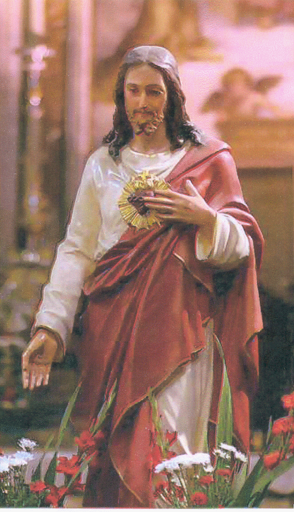
- “Estava dando graças a DEUS e pedindo algumas coisas. ELE ia me respondendo. Eu pedi uma cruz, pois estou vivendo sem nenhum sofrimento, apenas com o sofrimento de não ter uma cruz”.
JESUS me respondeu:
- “EU lhe darei uma cruz”.
- “E eu com muita emoção, ia pedindo-lhe mais e mais, e LHE perguntei: Por qual motivo acontecerá o GRANDE MILAGRE? Para converter muita gente”?
ELE respondeu:
- “Para converter o mundo inteiro”.
- “A Rússia se converterá”?
- “Também se converterá, e assim, todos amarão os DOIS SAGRADOS CORAÇÕES”.
- “E depois virá o CASTIGO”?
NOSSO SENHOR não respondeu. Conchita então perguntou:
- “Por que o SENHOR vem ao meu pobre coração, que não tem qualquer merecimento”?
- “Se não venho por ti, venho por todas as pessoas”.
- “O GRANDE MILAGRE que NOSSA SENHORA me mostrou, somente eu irei anunciá-lo”?
- “Por teus sacrifícios e padecimentos, escolhi tu para ser a intercessora do Milagre”.
- “SENHOR, não seria melhor que fosse todas as quatro meninas? Se não for da Vontade do SENHOR colocar as quatro, posso LHE pedir para não me colocar sozinha”?
NOSSO SENHOR disse: “Não”.
- “Eu irei para o Céu”?
- “Nos amarás muito e rezará perseverantemente aos NOSSOS SAGRADOS CORAÇÕES”.
- “Quando o SENHOR me dará a cruz”?
NOSSO SENHOR não lhe respondeu. Conchita então perguntou:
- “O que será de mim, da minha vida”?
JESUS apenas lhe disse: “Em qualquer lugar onde estiver e o caminho que tiver de trilhar, terá muito que sofrer”.
- “Vou morrer brevemente”?
- “Terá que estar na Terra para ajudar o mundo”.
- “Eu tenho poucos conhecimentos e nenhuma influência. Não posso ajudar em nada”.
- “Com tuas orações e sofrimentos ajudará o mundo”.
- “Quando se vai ao Céu, primeiro se morre”? (A pergunta de Conchita é demasiado infantil. Sua pouca cultura faz com que algumas de suas perguntas sejam extremamente simples e não corresponde ao conhecimento que deveria ter a sua idade. A resposta de NOSSO SENHOR foi de uma profundidade assombrosa).
ELE disse:
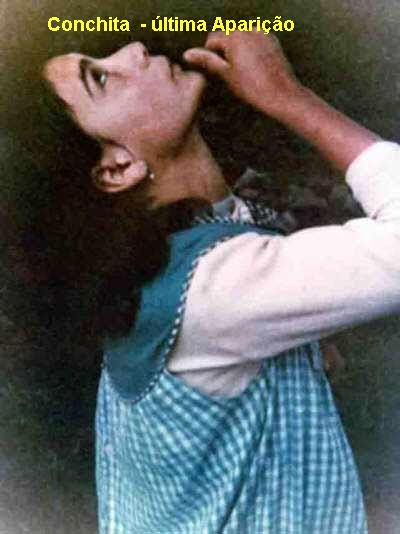
JESUS também disse a Conchita, que agora existem mais pessoas que amam o Seu SAGRADO CORAÇÃO. E sobre os Sacerdotes, ELE pediu muitas orações para que sejam Santos e cumpram bem com os seus deveres e obrigações, dando um digno exemplo, a fim de que as pessoas sejam melhores e estimuladas a seguir o caminho do direito, da justiça e do amor fraterno, porque este é o caminho que conduz ao PAI ETERNO.
Finalizando a “locução interior”, Conchita disse:
- “Quando estava nesta oração ou conversação com DEUS, me sentia como se estivesse fora da Terra”!
CARTA AO PADRE MORALES
No dia 13 de Novembro de 1965, Conchita escreveu uma carta ao Padre Gustavo Morales, sacerdote mexicano, fundador da Legião Branca de NOSSA SENHORA DO MONTE CARMELO, descrevendo o seguinte:
- “Hoje, sábado, numa locução interior com a VIRGEM MARIA, na Igreja, Ela me comunicou que encontraria comigo nos Pinheirais numa Aparição especial para beijar objetos religiosos. Estava chovendo, mas não me preocupei pois estava com imenso desejo de rever a VIRGEM com o MENINO JESUS em seus braços. Subi aos Pinheirais levando muitos Terços, para serem beijados por NOSSA SENHORA e depois repartidos para o povo.
Caminhando sozinha, pensava em meu coração muito arrependida de meus próprios defeitos e fazia o propósito de me esforçar muito mais, para não cair nas mesmas faltas outra vez, porque me dava vergonha e um terrível sentimento de culpa, apresentando-me diante da MÃE DE DEUS, sem estar dignamente penitenciada dos meus pecados. De repente Ela chegou sorridente e linda como sempre, com o MENINO JESUS nos braços, chamando pelo meu nome. Eu a cumprimentei também sorridente, mas como estava mascando um chiclete, parei de mastigá-lo e o colei num cantinho. Ela reparou e me disse”:
- “CONCHITA, porque não deixas o chiclete e o oferece como sacrifício pela glória de Meu FILHO”?
- “E eu com vergonha, tirei-o da boca e joguei-o no chão”. A VIRGEM continuou dizendo:
- “Relembre que Eu te disse que sofrerias muito na Terra? Pois volto a dizer-lhe, tenha confiança em NÓS e ofereça com prazer aos NOSSOS CORAÇÕES, todos os sacrifícios, em benefício de seus irmãos, porque assim, estará mais unida a NÓS”.
Conchita falou:
- “Que indigna eu sou, ó querida Mãe, por tantas as Graças que recebi da Senhora. Desculpe-me minha Mãe”.
- “Conchita, não venho só por você, mas também, por todos os Meus filhos, com o desejo de aproximá-los de NOSSOS CORAÇÕES”.
E pediu a Conchita:
- “Onde estão os Terços que trouxeste para Eu beijar”.
E Conchita entregou-Lhe todos os Terços. Entregou também um Crucifixo, que a VIRGEM beijou e depois disse:
- “Deve passá-lo às
mãos do MENINO JESUS”.
Conchita entregou o Crucifixo ao MENINO JESUS que o olhou com carinho e lhe devolveu.
Então ela 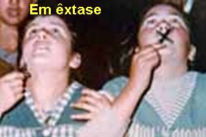
- “Esta cruz levarei comigo ao Convento”. O MENINO JESUS e a VIRGEM MARIA não disseram nada. (Pode-se compreender este silencio persistente da SANTÍSSIMA VIRGEM, assim como as palavras claras de NOSSO SENHOR, na locução interior do dia 13 de Fevereiro de 1963, quando Conchita LHE perguntou sobre a sua vocação religiosa, e ELE silenciou, como uma prova evidente de que DEUS já tinha reservado para ela outra vocação, uma vocação muito particular).
Depois de beijar os Terços a VIRGEM MARIA falou:
- “Meu FILHO, por meio destes objetos beijados por Mim, fará prodígios. Reparte-os entre as pessoas”.
UM FATO CURIOSO
No inicio das Aparições e até o tempo em que as quatro meninas viam e conversavam com a VIRGEM MARIA, Conchita e as outras, quando estavam em êxtase, olhando para NOSSA SENHORA, observaram que com ternura Ela olhava para todas as pessoas que estavam presentes, e com um detalhe, às vezes fixava em algumas para observá-las mais minuciosamente, e sempre, com aquela satisfação de Mãe, dizia: “Todos estes são Meus filhos”. E depois perguntava:
- “Fala-me Conchita, diga-me coisas dos meus filhos! A todos guardo embaixo de Meu Manto”.
E Conchita na sua infantil simplicidade Lhe dizia:
- “Vosso manto Mãe, é muito pequeno, não cabe todos nós”.
E NOSSA SENHORA repleta de Amor sorriu carinhosamente, e disse:
- “Sabe Conchita, porque não vim no dia 18 de Junho para dar a Mensagem ao mundo? Por que me dava pena transmiti-la. Todavia é necessário que Eu lhes diga, para o vosso próprio bem e glória de DEUS, se vós a cumpris. Eu os quero muito e desejo a vossa salvação, para Nos reunirmos na eternidade, em torno do PAI, do FILHO e do ESPÍRITO SANTO. Posso contar com você Conchita”?
- “Se eu estiver vendo sempre a SENHORA, sim; em caso contrário, não sei, porque sou muito má”.
- “Tu faça o teu esforço e NÓS te ajudaremos, como também ajudaremos as Minhas filhas: Loli, Jacinta e Mari Cruz”.
A VIRGEM ainda disse:
- “Esta será a última vez que Me verá aqui”. (Conchita não soube interpretar estas palavras de NOSSA SENHORA, se Ela queria dizer que não virá mais aos “Pinheirais”, ou a “Garabandal”). A VIRGEM completou: “Mas estarei sempre contigo e com todos os Meus filhos”.
Depois acrescentou:
-
“Conchita, porque não vai com mais frequência visitar o Meu FILHO no SANTÍSSIMO SACRAMENTO?
Por que se entrega a preguiça, não indo LHE visitar, quando ELE está esperando dia e
noite”?
Estava chovendo muito e a VIRGEM e o MENINO JESUS não se molhava. Disse Conchita:
- “Quando eu estava conversando com ELES, não percebi que chovia, mas quando eles se foram, a chuva me molhou inteiramente”. Então Conchita falou:
- “Que feliz que sou quando LHES vejo! Porque não me leva CONTIGO agora”? A VIRGEM respondeu:
- “Lembre-se daquilo que Eu te disse, sobre o dia do teu Santo... Ao apresentar-te diante de DEUS, terás que mostrar as tuas mãos cheias de boas obras feitas por ti, em favor de teus irmãos, para a glória de NOSSO DEUS E CRIADOR”.
E completando a sua narrativa disse Conchita: “E nada mais aconteceu neste momento tão feliz ao lado de minha Mamãe do Céu, a minha melhor Amiga, e do MENINO JESUS”. (É uma expressão usada muito frequentemente por Conchita) Depois de um longo tempo, também Conchita deixou de vê-LOS, mas não de senti-LOS. (Seguramente fazendo alusão às locuções interiores que aconteciam).
Disse Conchita:
- “A presença DELES, de novo derramou em meu animo uma grande paz e uma imensa alegria e uma firme disposição para vencer os meus próprios defeitos e conseguir amar, com todas as minhas forças, aos SAGRADOS CORAÇÕES DE JESUS e de MARIA, que tanto bem quer para nós”.
“Anteriormente
(agora ela está se referindo às
Aparições) a VIRGEM me disse
que JESUS mandava o CASTIGO não para nos aborrecer, punir e maltratar, mas
para nos repreender e corrigir, porque não damos importância a ELE, e assim,
o CASTIGO serve para nos ajudar. E o AVISO, ELE nos manda para nos purificar,
para compreendermos a necessidade de mudarmos o rumo de nossa vida e sermos boas
pessoas, a fim de podermos apreciar o MILAGRE com o qual ELE nos mostrará
claramente a grandeza do Amor que tem por todos nós. E por essa razão, por
ser benéfico a nós, é um grande desejo DELE que todos acolham e cumpram
a MENSAGEM.
O AVISO será visto em todas as partes do mundo e cada pessoa sentirá no seu
interior a força dele, atuando na alma como se fosse um castigo de correção.
Cada pessoa verá o mal causado pelos seus próprios pecados. Penso que tudo isto
será muito bom, porque será em benefício de todos. Assim sendo, as pessoas não
devem se desesperar, porque estes acontecimentos serão para a nossa santificação”.
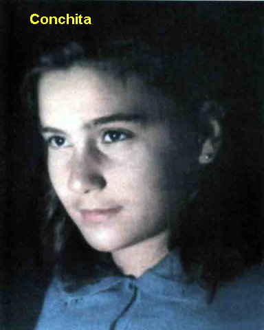
EXPERIÊNCIA RELIGIOSA
No dia 7 de Fevereiro de 1966, Conchita entrou como aspirante na Ordem das Carmelitas Calçadas Missionárias de Pamplona, com o desejo de seguir a vocação religiosa. Seis dias depois, no dia 13, as palavras de NOSSO SENHOR foram decisivas e fortes. Depois que ela recebeu a Sagrada Comunhão na Santa Missa, no momento de dar graças a DEUS, Conchita teve uma grande alegria e no mesmo momento, teve uma tristeza muito maior, uma grande desilusão. Ouviu a Voz de JESUS que lhe disse assim:
“Conchita, tu veio aqui no Colégio para se preparar a fim de ser a Minha Esposa para ME seguir? Mas tu não ME disseste que quer cumprir a Minha Vontade? Como é que agora Conchita, tu queres cumprir a tua vontade? É assim que quer seguir a tua vida? EU te escolhi no mundo, para que estejas nele, enfrentando as muitas contrariedades que por MIM, encontrarás. Tudo isto EU quero para a tua santificação, por isso, deve oferecer todos os sacrifícios pela salvação do mundo. Deves falar ao mundo de MARIA. Fazer com que a MINHA MÃE seja verdadeiramente conhecida. Recorda-te que no mês de Junho, perguntou-me se seria uma monja. EU Te disse, que em qualquer parte encontrarás a Cruz, o sofrimento, e por essa razão, volto a Te dizer agora: Conchita, você sentiu a Minha chamada para se tornar Minha Esposa, entrando numa Ordem Religiosa? Não sentiu, porque EU não te chamei”.
Conchita perguntou a NOSSO SENHOR: - “Como se sente a TUA chamada para ser uma Monja”?
JESUS lhe respondeu:
- “Não te preocupes, no momento certo tu sentirás Minha chamada”.
Conchita falou:
- “JESUS, então não me queres”?
ELE disse:
- “Conchita, porque tu fazes este tipo de pergunta! Quem te redimiu? Cumpre a Minha Vontade e encontrarás o Meu AMOR. Examina-te bem. Pensa mais no próximo, não te preocupes com as tentações. Se for fiel ao Meu AMOR, vencerás todas as tentações. Seja inteligente naquilo que EU te digo, inteligente espiritualmente, não oculte os olhos da alma, não se deixe enganar por nada. Ama a humildade, a simplicidade, nunca penses que o que fez é muito, pensa no que tem que fazer e no que deve fazer, não para ganhar o Céu, mas para que o mundo se converta e cumpra a Minha Vontade. Que toda alma esteja preparada, porque quem tem a alma disposta a ME ouvir, saberá qual é a Minha Vontade”.
“Quero dizer-te Conchita, antes que o GRANDE MILAGRE aconteça, sofrerás muito, pois encontrarás poucos que creiam. Tua família mesmo imaginará que você se enganou. Tudo isto EU te digo, é para a tua santificação e para que o Mundo se converta e cumpra a Mensagem. Quero prevenir-te que o resto de tua vida será um contínuo sofrimento. Não te acovardes, no sofrimento estaremos junto de ti, EU e MARIA, a quem tanto tu queres”.
Conchita perguntou se em Roma acreditariam nela.
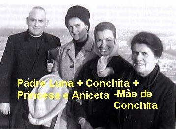
NOSSO SENHOR respondeu:- “Não te preocupes se acreditam nas tuas palavras ou não acreditam. EU farei tudo. Mas também te darei o sofrimento. Quem sofre por MIM, EU estarei com ele”.
(Esta passagem aconteceu na Itália. Ela foi convidada pelo Santo Ofício para ir a Roma acompanhada de sua mãe Aniceta e do Padre Luis Luna, em Janeiro de 1966. A impressão geral de Conchita sobre a viagem foi muito boa. Foi recebida pelo Cardeal Ottaviani (que era Prefeito da Sagrada Congregação) com maravilhosa afabilidade, sendo submetida a um interrogatório durante mais de duas horas. Todas as anotações foram feitas pelo Secretário do Cardeal, e ela, com muita simpatia e respeito, sempre recebeu as melhores atenções de todos. No dia em que o Papa Paulo VI concedia audiência pública, Conchita com sua mãe estavam presentes. Terminada a audiência, Sua Santidade saindo em sua Cadeira Gestatória localizou Conchita no meio da multidão. Mandou que os soldados que o transportavam, parassem, e chamou a menina. Com voz clara e forte lhe disse: “Conchita eu te bendigo e comigo também te abençoa toda a Igreja” , fazendo o sinal da Cruz sobre ela.
UM NOME LIGADO A GARABANDAL
Na foto vemos
o Papa João Paulo II com Joey Lomangino, fundador de “The Workers of Our Lady of Mount Carmel of Garabandal”
(Os Trabalhadores de 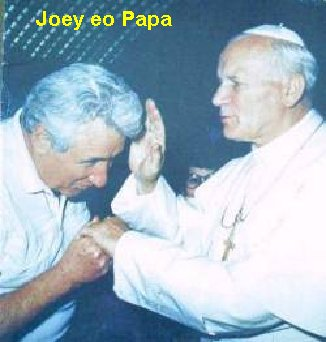
CONTRADIÇÕES E RETRATAÇÕES
Desde o inicio das Aparições, a Visão anunciava que chegaria o tempo em que as meninas iam se contradizer mutuamente, uma as outras e, inclusive chegariam a dizer que nunca existiram as manifestações sobrenaturais. São as chamadas “Noites Escuras” ou “Deserto Espiritual” que também aconteceu na vida de muitos Santos famosos. As meninas com frequência comentavam que a VIRGEM lhes havia feito esta afirmação.
Reproduzimos alguns textos relacionados com este assunto, retirados do “DIARIO DE CONCHITA” , escrito em 1963:
“Desde os primeiros dias das Aparições, a VIRGEM nos disse, que chegaria o tempo em que nós iríamos nos contradizer, uma as outras, que nossos pais não estavam acreditando, e que chegariam a nos dizer que tínhamos de NEGAR que vimos a VIRGEM e o ANJO. E nós evidentemente estranhamos muito que fosse acontecer isto”.
Segundo uma Locução Interior que teve Loli em Novembro de 1965, a VIRGEM MARIA lhe anunciou que ela ia passar um período de muitas dúvidas.
Disse Loli: - “Ela me disse que teria de sofrer muito neste mundo, que teria muitas provas severas, que me levaria a duvidar de tudo que vi e senti, e isto, ia me fazer sofrer muito mais”.
Na Locução que Conchita teve no dia 13 de Fevereiro de 1966, NOSSO SENHOR lhe fez uma séria advertência:
- “Te repito que terás muito que sofrer, de hoje até o dia do GRANDE MILAGRE, pois poucos acreditam nas tuas palavras. Tua família mesmo imagina que estás enganada. Mas tudo isto, sou EU quem quero, como já disse, para a tua santificação e para que o mundo cumpra a Mensagem. Quero te prevenir que o resto de tua vida, será um continuo sofrimento”.
Em 1963, Conchita escreveu em seu Diário: “Mari Cruz continua dizendo que ela não viu a VIRGEM”!
No final do mês de Julho de 1961, com doze anos de idade, quando Conchita foi levada a Santander e lá permaneceu por oito dias, afirmam que ela chegou a assinar um papel dizendo que não tinha visto NOSSA SENHORA.
Na verdade, a história de Garabandal guardou dois períodos de dúvidas e contradições das meninas: um em Janeiro de 1963 e o outro no transcurso do ano 1966.
Sobre o primeiro período, Conchita escreveu no seu Diário:
- “No mês de Janeiro de 1963, tudo aquilo que a VIRGEM nos havia prevenido aconteceu; começamos a nos contradizer umas com as outras, até negar que tínhamos visto NOSSA SENHORA. E por isso, depois envergonhadas e arrependidas, fomos nos confessar, porque em nosso interior, sabíamos que tínhamos visto o Arcanjo São Miguel e a MÃE DE DEUS”.
Conchita ainda disse: “Eu mesma me estranhava de dizer aquelas palavras, pois minha consciência estava verdadeiramente tranquila de ter visto a VIRGEM e o ANJO”.
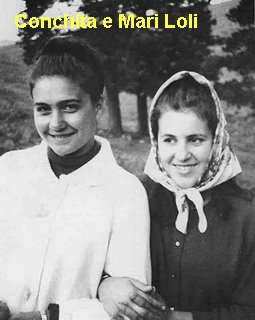
Estas tentações contra a fé, foram seguidas de duvidas sobre a realidade objetiva das suas Visões. Conchita se perguntava a si mesma, se não era um jogo da sua imaginação, ou se não estava sendo vítima de alguma perturbação psíquica ou mental. Na mesma época, Loli e Jacinta, em lugares distintos e a muitos quilômetros de distância de Conchita, sofreram o mesmo fenômeno angustiante, sobre a realidade das Aparições.
Posteriormente as meninas retornaram a Garabandal e no mês de Agosto, decidiram comunicar as suas dúvidas ao senhor Padre Valentim. Como já mencionamos, o Padre ficou muito bravo, triste e desapontado com elas, e lhes deu muitos conselhos.
Foi realizada uma segunda entrevista de Conchita com o senhor Bispo de Santander, mas desta vez em Santander mesmo. Regressando a Garabandal Conchita revelou, que nesta ocasião teve a intenção de dizer ao Prelado a “Data do Grande Milagre” anunciado. Mas no momento em que ia dizer, “deu um branco que apagou a data no seu raciocínio”, e se esqueceu de tudo. Entretanto, logo que deixou o Palácio Episcopal, bruscamente a “Data do Grande Milagre” voltou com toda clareza a sua mente. Compreendeu então, que não era a Vontade do SENHOR que ela comunicasse a data ao senhor Bispo.
Em Janeiro de 1967, o Padre Gustavo Morelos, esteve com as meninas em Garabandal. E levou uma pintura, feita pelo pintor Octavio, radicado no México, que mostra NOSSA SENHORA conversando com as quatro meninas, numa Aparição em Garabandal. Ao vê-la Conchita fez um gesto de prazer pelo quadro e tomando-o nas mãos, principiou a fazer algumas observações: “Que NOSSA SENHORA não trazia uma coroa, as estrelas que circundavam a Cabeça Dela é que iam se entrelaçando, formando o que elas denominaram de coroa. Que a VIRGEM não trazia cíngulo na cintura e, que mantinha a face erguida e não com a cabeça inclinada; e também, que o Escapulário Ela não o trazia sobre a mão direita”.
No dia seguinte o Padre Morelos viajou para encontrar Loli e Jacinta, e depois, mostrando-lhes a mesma pintura, Loli se aproximou e disse:
- “Padre, a VIRGEM que nós vimos não trazia coroa, não tinha a cabeça virada de lado, não tinha cíngulo e o Escapulário, Ela não trazia sobre a mão direita em forma de manípulo”.
Estas observações feitas por diferentes meninas ha muitos quilômetros distantes uma da outra, é uma prova eloquente de que elas, em pleno período de dúvidas e negações, em seu interior levavam muito bem gravada a imagem da SANTÍSSIMA VIRGEM MARIA, que, portanto, tiveram a felicidade de ver e contemplar.
Os acontecimentos sobrenaturais em Garabandal, que começaram em 1961 e terminaram em 1965, sem dúvida, oferecem uma clara e evidente percepção, de que são continuação das Aparições acontecidas em Fátima no ano 1917, e assim como, as Aparições de NOSSA SENHORA em Akita no Japão, no ano de 1973, nos dá a plena e total convicção de que as Mensagens, nas três Manifestações Sobrenaturais, se interligam e se completam, revelando a imensidão do Amor de DEUS por toda humanidade, da mesma forma que mostra de modo impressionante, a preocupação Divina, pela falta de amor e de fidelidade da humanidade que ELE criou com tanto carinho e ternura, que redimiu e que salvou com o seu sagrado e precioso sangue.

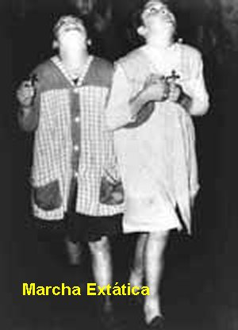
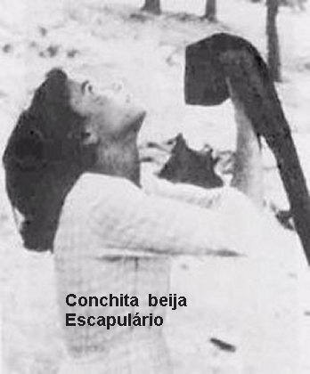
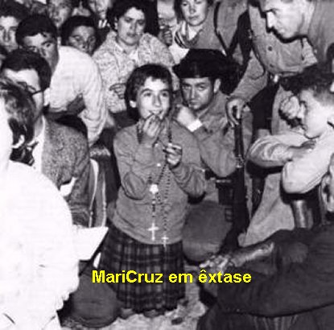
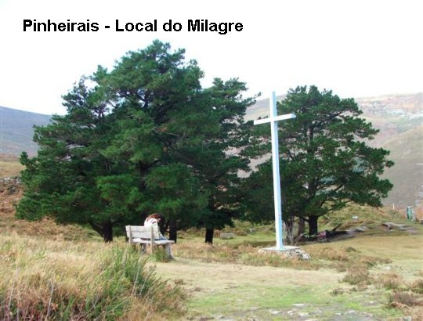
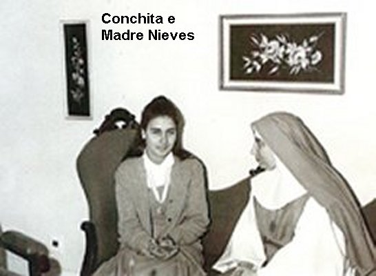
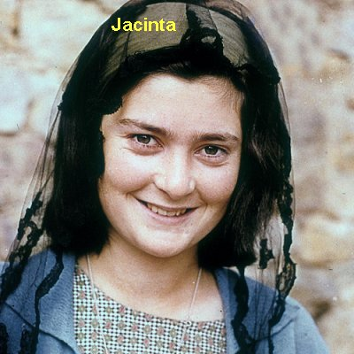
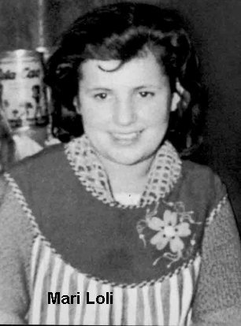
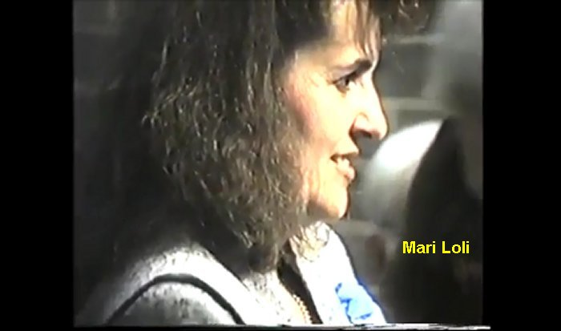
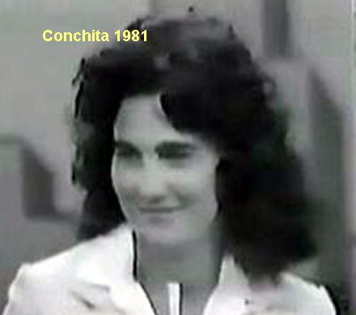